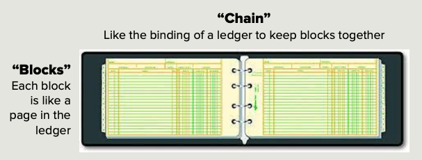

Blockchain: The Brazilian Jiu-Jitsu of Web 3.0
If you are not a mixed maritial arts (MMA) fan, you might not recognize the photo above. Royce Gracie, a man of relatively slender stature and weighing a modest 170 lbs, won the first two Ultimate Fighting Championship (UFC) tourniments. In the early days of the UFC, there were no weight divisions and Royce Gracie routinely competed againt opponents that were 40 lbs or more larger than him.
How was he able to defeat these larger competitors? The answer is Brazilian Jiu-Jitsu (BJJ), or Gracie Jiu-Jitsu. BJJ is based on the observation that most of the MMA-style of fights usually end up with the participants on the ground. The founders of BJJ adapted their style to ground fighting leveraging aspects of jiu-jitsu and judo.
Why am I making the analogy of Blockchain and BJJ? Brazilian Jiu-Jitsu completely transformed the world of fighting sports to the point where every fighter trains in it. Fighters train in BJJ because they either want to use the grappling techniques or they need to defend against it. Likewise, Blockchain will have a similar, if not more profound, effect as a foundational building block of Web 3.0.
What is Blockchain?
Blockchain is a ledger. It keeps entries in chronological order and the writing of data only moves in one direction, forward. Once a block of data is added to the Blockchain, that information can not be changed or edited.

Immutability
Immutable means not changing or unable to be changed1. The data is unchangeable for two reasons that are principal aspects of Blockchain architecture. First is the hash, or fingerprint, of the block. Each block contains the hash of the previous block such that any tampering will be apparent. Second is the fact that each node in the Blockchain keeps a copy of the ledger. Consensus algorithms ensure each node agrees on a new block before adding it.
Transparent
Blockchain technology represents a paradigm shift in transparency, distinguishing it from conventional systems. In a Blockchain, each transaction is recorded in a public ledger, accessible to all nodes. This visibility ensures that anyone with access can independently verify and audit transactions, fostering a level of transparency previously unattainable. The decentralized nature of Blockchain means that no single entity controls the ledger. This characteristic significantly mitigates the risks of fraud and corruption while enhancing accountability and trust. Such transparency is particularly critical in sectors where trust and integrity are paramount, including financial services, supply chain management, and electoral processes. Therefore, understanding the transparent nature of Blockchain is essential for comprehending its transformative potential in various fields.
Incentivize Behavior
Blockchain technology can be effectively utilized to incentivize behavior through the creation of token-based economies. By issuing digital tokens as rewards, Blockchain architectures can encourage desired actions and contributions within a community. These tokens can represent various forms of value and be earned through specific behaviors, such as participating in activities, contributing to a project’s development, or providing a service. The transparency and security of blockchain ensure that rewards are distributed fairly and verifiably. Additionally, the liquidity of tokens allows users to trade or redeem them for other assets, creating a tangible motivation for engagement. This incentivization mechanism can be applied in diverse contexts, from encouraging sustainable practices and fostering innovation to promoting user participation in decentralized applications (dApps) and enhancing loyalty programs in businesses. Through Blockchain-based incentives, organizations can effectively align individual motivations with collective goals, driving positive and productive behavior.
Conclusion
In conclusion, while Brazilian Jiu-Jitsu (BJJ) and blockchain technology may seem worlds apart, they share remarkable parallels in structure, strategy, and application. Both BJJ and blockchain transformed their respective industries. BJJ teaches practitioners to leverage technique and strategy over brute force, much like blockchain leverages cryptographic algorithms to ensure security and trust without central authority. Both fields emphasize the importance of adaptability and continuous improvement, encouraging participants to refine their skills and approaches in dynamic environments. Technology practioners can appreciate how diverse disciplines offer valuable insights into one another, highlighting the universal principles of resilience, innovation, and strategic thinking that drive both personal growth and technological advancement. Whether on the mats or in the digital realm, the lessons from BJJ and blockchain underscore the potential for transformative impact through dedication, transparency, and decentralized collaboration.